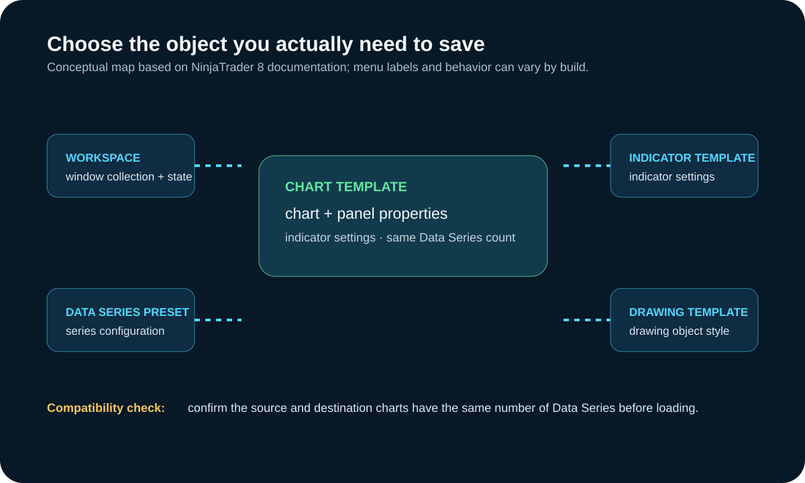

NinjaTrader 8 Chart Templates: Save, Load, Default, and Troubleshoot
Updated September 19, 2026
NinjaTrader 8 chart templates save reusable chart configuration. They are different from workspaces, indicator templates, strategy templates, drawing-object templates, and data-series presets. Keeping those objects separate prevents many “template did not load” misunderstandings.

What a chart template saves
NinjaTrader's current help guide says chart templates can save chart properties, chart-panel properties, and indicator settings. They can be applied to new or existing charts when the source and destination charts have the same number of Data Series. Drawing objects are not included because they can be specific to an instrument or price.
What a chart template does not replace
| Object | Use it for | Do not confuse it with |
|---|---|---|
| Chart template | Reusable chart, panel, and indicator configuration | A workspace or drawing-object template |
| Workspace | A collection of windows and their state | A portable chart configuration for every chart |
| Data Series default | Defaults for a period type or chart style | A complete chart template |
| Indicator or strategy template | Settings for that specific object | The chart template itself |
| Drawing-object template | Reusable drawing-style settings | Drawing objects embedded in a chart template |
This separation matters in troubleshooting. A desired chart layout may be a chart-template problem; a missing window may be a workspace problem; and a missing drawing style may be a drawing-object-template problem. Changing the wrong object can overwrite settings without fixing the original issue.
For a concrete distinction, a trader might want every new five-minute chart to use a chosen panel layout and set of indicators. A chart template is the relevant object. If they instead want the Control Center, several charts, and an order-entry window to open together, that is workspace behavior. If the desired change is only the default parameters for a specific indicator, use that indicator's saved settings rather than overwriting a chart template.
Save and load a chart template
- Configure the chart and confirm its Data Series count.
- Right-click the chart and choose Templates → Save As.
- Use a descriptive name that identifies purpose and data-series layout.
- To apply it, right-click the destination chart and choose Templates → Load.
- Confirm the Trading Hours and Data Series settings after loading; a template can override manually configured Data Series settings.
Default template versus other defaults
Save as Default sets the default chart template for new charts. NinjaTrader documents that a chart template, including the default chart template, can override chart-property defaults. Data Series presets, indicator templates, strategy templates, and drawing-object templates have their own save and load controls.
Concrete workflow: build a repeatable chart
- Create a test chart with the intended number of Data Series, Trading Hours, chart properties, panels, and indicators.
- Save it under a descriptive name that includes the data-series layout.
- Open a second chart with the same number of Data Series and load the template.
- Confirm that Trading Hours, series settings, panels, and indicators match the intended workflow.
- Only then use Save as Default if every new chart should begin from that configuration.
Use a disposable test chart for the first load. NinjaTrader documents that a loaded chart template can take precedence over manually configured Data Series settings, including Trading Hours. That is useful when intentional and disruptive when unanticipated.
For example, build a two-series test chart, save a template, then try loading it on a one-series chart before deciding it is portable. NinjaTrader's documented same-number-of-Data-Series requirement is a compatibility gate, not a cosmetic preference. If the template does not load as expected, record the chart's series count, Trading Hours, indicators, and installed build before changing settings.
Templates and workspaces are not the same thing
A workspace preserves a collection of windows and their state. A chart template stores reusable chart configuration. The prior version of this guide incorrectly described “local” and “global” chart templates tied to individual workspaces; that distinction belongs to other NinjaTrader objects and is not how the current chart-template guide defines templates.
Troubleshooting checklist
- Confirm both charts have the same number of Data Series.
- Confirm required indicators or custom NinjaScript components are installed.
- Check whether the loaded template changed Trading Hours or other Data Series settings.
- Use Templates → Manage for rename or remove operations in the current help guide.
- Before upgrades, migrations, or reinstalls, use NinjaTrader's current backup/restore instructions and verify the backup contents.
Backup, import, and change-control caveat
A template is not a substitute for a tested backup. Before an upgrade, computer migration, or major cleanup, use the backup and restore procedure documented for the installed NinjaTrader build, preserve a dated copy, and test restoration in a controlled setting when the workspace matters. Do not assume every third-party indicator, connection, license, or external file travels with a chart template.
Menu names and supported behavior can change between builds. If a live account, automation, or custom component depends on a template, compare the installed build's documentation and test with a non-production chart before overwriting a working configuration.
A practical troubleshooting sequence
- Reproduce the issue on a non-production chart and identify whether the missing behavior belongs to a template, workspace, Data Series, indicator, strategy, or drawing object.
- Confirm the source and destination charts have the same number of Data Series.
- Load the template and inspect Trading Hours and other overridden settings before adding anything else.
- Verify required custom indicators or NinjaScript components are installed and compatible with the current build.
- Use the documented management and backup controls only after preserving a recoverable copy of the working configuration.
Operational caveat
Menu labels and supported behavior can change by NinjaTrader release. This walkthrough describes NinjaTrader 8 documentation reviewed on the date shown above; it is not a substitute for the help guide matching the installed build.
Example: diagnosing a template that appears wrong
Assume a chart opens with an unexpected session template and an indicator layout that looks incomplete. Do not immediately overwrite the saved chart template. First compare the chart's Data Series count with the source chart and confirm which template was actually loaded. Then inspect Trading Hours and the installed indicators. A chart template can take precedence over manually selected Data Series settings, while a missing custom indicator may be a separate installation or compatibility problem.
If the goal is to preserve a working setup, save a recoverable copy before testing a replacement. Change one variable, load on a test chart, and record the result. This makes a later restoration possible and prevents a troubleshooting session from silently turning into a destructive configuration change. A successful load on one chart does not establish that it will work on every chart, instrument, build, or workspace.
Sources, scope, and change risk
Reviewed September 19, 2026 against the following first-party or regulatory sources:
- NinjaTrader 8: Saving Chart Defaults and Templates
- NinjaTrader 8 Charts overview
- NinjaTrader 8 Help Guide PDF
NinjaTrader menus, backup behavior, templates, indicators, and compatibility can change by build. Confirm the installed version and current official help before overwriting templates or migrating a workspace. NinjaTrader is a third-party trademark; this site is not affiliated with or endorsed by NinjaTrader.